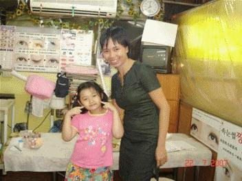
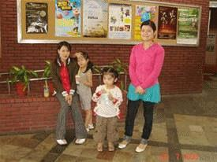
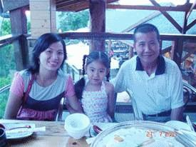

Tiền Phong - Những đường đời đã trải, không như cuốn phim quay lại. Những vai đã đóng, mãi mãi là thân phận mình cả đời. Mà cho dù chúng tôi có bỏ chồng, chúng tôi cũng vĩnh viễn là cô dâu Việt.
Chúng tôi có quay về quê hương, thì những năm tuổi trẻ và bao khao khát mơ ước vẫn ở lại mảnh đất này.

Tác giả và con của một cô dâu Việt
Tôi là cái cây đã bị bốc lên khỏi gốc rễ, giờ phiêu bạt bốn phương trời cũng là số mệnh. Tôi hiểu ra vì sao có những chị em bị bán ra nước ngoài, bị ép làm vợ những người Trung Quốc, sống trong nghèo đói, đau khổ tăm tối, những tưởng sau khi họ tìm cách về được Việt Nam thăm lại gia đình, họ sẽ ở lại luôn.
Thế mà không, họ ở lại Việt Nam vài ngày, rồi quày quả quay lại nơi tăm tối mà họ đã bao năm, bao chục năm, mong thoát ra ấy.
Đó là cảm giác của một cái cây đã bị bứng khỏi đất mẹ, phải đi nốt chặng đường số mệnh.
Như thế, quay về nào còn ý nghĩa gì, ngoài việc may ra sẽ được chôn cạnh mộ cha sau này?
Trong một phút đau đớn, tôi nhắn tin về cho Ngà: "Ngà ơi, nếu một ngày nào đó tao chết, tao xin mày giúp tao một việc cuối cùng. Rải tro của tao ra biển Đông nhé!".
Cuộc đời tôi đã chia đôi giữa Việt Nam và Đài Loan, lúc chết, tôi nghĩ chỉ có cách ấy tôi mới không cô đơn nằm lại chỉ một nơi.
Ngà khùng lên, nó gọi điện thoại quốc tế chửi tôi tối tăm mặt mũi, nói tôi khùng, tôi gở mồm, tôi thần kinh bậy bạ.
Vào lúc chơi vơi, tôi ngồi ngoài đường, bấm bừa các số di động trong máy. Thấy trong máy điện thoại còn lưu số của một người đặc biệt, người mà năm ngoái hỏng xe đã ghé tiệm trầu cau của tôi ngồi trò chuyện. Tôi bấm thử số máy của ông, đầu kia nghe máy sau một hai tiếng tút dài, tự dưng tôi thấy hồi hộp.
Tôi bảo, chào ông, ông còn nhớ tôi không, tôi là cô dâu Việt Nam bán trầu cau trên đường ra sân bay ngày xưa đây, xe ông ngày đó bị chết máy, ông đến ngồi ở bậc thềm của tiệm tôi.
Ông nói, tôi nhớ chứ, tôi có đi qua đó nhưng người ta bảo cô bỏ việc lâu rồi.
Chúng tôi hẹn nhau tại quảng trường Ánh sáng của Cao Hùng. Ông vẫn lịch thiệp như thế, ông hiểu ngay vấn đề của tôi chỉ sau vài lời tường thuật.
Người đàn ông ghi cho tôi một mảnh giấy nhỏ, rồi đưa cho tôi:
- Cô đã có chứng chỉ nghề, cô cũng có khả năng giao tiếp tốt, tự kiếm tiền sinh sống được. Vậy đây là địa chỉ, cô có thể tới đây ở. Cô có thể ở tạm, nếu cô muốn ở hẳn, cũng không có vấn đề gì, với điều kiện cô hứa rằng cô sẽ sống đàng hoàng.
Sống đàng hoàng tức là mở tiệm, làm ăn hợp pháp, không buôn bán hàng phi pháp, không đánh bạc. Chắc chắn ông không biết sống đàng hoàng với tôi mang định nghĩa khác, giờ đây, đối với tôi tức là không đi khách nữa, không làm gái bao nữa.
Tôi không rõ, tôi rời ông Lữ nhẹ nhõm như thế, không ai hận ai cả. Người đàn ông tốt bụng họ Lưu cũng chính là người sau này đã giúp tôi mở tiệm.
Tôi trở thành bà chủ trong tình cảnh trớ trêu ấy. Một cô gái bao trở thành chủ của tiệm làm đẹp, sơn móng tay, đắp mặt nạ, trang điểm thuê, vẫn bằng tiền của đàn ông, nhưng không bằng cách đánh đổi thân xác.
Sau bao năm, ông Lưu là người đàn ông đầu tiên làm cho tôi thấy, đứng trước mặt ông, tôi là một con người, nên tôi đủ tư cách để ngẩng đầu nhìn thẳng.
Gương mặt tôi nhìn thẳng trông xinh đẹp hơn lúc cúi đầu. Có vẻ cương nghị buồn rầu, tôi thay màu tóc khác, màu nâu nhạt, tóc uốn nhẹ ôm lấy bờ vai, nữ tính và thảnh thơi. Tôi thấy sợ mái tóc vàng điên rồ và đôi mắt thất thần của chính mình ngày xưa.

Những cô dâu Việt cùng con ở Đài Loan. Ẳnh do tác giả cung cấp
Tôi thường dành riêng tối cuối tuần để đi chợ đêm, đi ăn với ông Lưu. Chúng tôi đã bàn kế hoạch đưa con trai tôi sang Đài Loan sống cùng mẹ. Ông Lưu cho rằng, nếu thế thì tôi nên chuyển sang làm cái gì ở nhà kết hợp trông con, chứ đừng đi lại nhiều. Ông cũng tình nguyện làm người lãnh dưỡng để đưa con tôi sang, nếu tôi cần.
Ông ngỏ ý sẽ để lại cho tôi căn hộ nhỏ này, nếu thu nhập của tôi cứ giữ ổn định thế này, và người chồng chính thức của tôi không đến gây sự.
Tôi đặt một máy điện thoại đăng ký gọi dịch vụ quốc tế giá rẻ. Rất nhiều chị em đã đến quán tôi chỉ để gọi điện về gia đình.
Nhiều câu chuyện kể bên máy điện thoại, nhiều cô dâu đã bắt đầu chen nhiều tiếng Hoa, tiếng Đài Loan vào câu chuyện, bất kể đầu dây bên kia người nhà Việt Nam có hiểu hay không.
"Sau bao năm, ông Lưu là người đàn ông đầu tiên làm cho tôi thấy, đứng trước mặt ông, tôi là một con người, nên tôi đủ tư cách để ngẩng đầu nhìn thẳng"
Hôm ấy cũng là chủ nhật, trời nắng đẹp, quán rất đông chị em dắt con tới chơi. Một người khách lạ mở cửa, cố để đẩy cửa kính sang hai bên. Một tay ôm bụng một tay vừa đẩy vừa níu cánh cửa tiệm.
Một cô gái đã đến ngày sinh nở rồi, đang chới với không biết định bước ra hay đi vào.
Ngay trong khoảnh khắc ấy, vụt trở về trong tâm trí tôi hàng ngàn ngày đêm đau khổ đã qua, những giây phút bị giày vò, hạnh phúc được làm mẹ và nỗi đau khổ phải làm mẹ một mình, chuyến taxi đêm bên đầm Nhật Nguyệt, tấm gương lớn trong nhà Thán, màu trời xanh qua cửa sổ bệnh viện Đài Trung, gương mặt yêu dấu của Nhan, sân ga lạnh lẽo trong đêm ở Phủ Li. Tôi kêu lên, giọng nghẹn lại:
- Đừng làm thế, em ơi!
Nói với cô ấy mà tôi như thể nói với chính cuộc đời mình.
Những chị em trong quán lao xao, chạy ra đỡ sản phụ.

Cặp vợ chồng Đài - Việt hạnh phúc
Ngọc cho đến giờ vẫn làm nghề sơn móng chân cho những cô gái làm nghề mát xa, phục vụ quán ăn, vũ trường quanh huyện Đài Bắc. Cô chỉ mong sao kiếm đủ tiền để sinh sống lương thiện và nuôi đứa con trai ở thành phố Hồ Chí Minh, chờ con lớn hơn một chút sẽ đón con sang Đài Loan cho nó ăn học tử tế.
Ngọc từng viết thư kể chuyện mình cho độc giả báo Bốn Phương tại Đài Loan biết, nhưng cô giấu kín thân phận, chỉ tiết lộ mình là ai với tôi và chủ biên báo Bốn Phương. Chúng tôi cũng chỉ được liên hệ với cô qua điện thoại. Cô không muốn gặp mặt ai nhưng cô khao khát muốn được chia sẻ.
Vân mỗi năm giận lẫy chồng vài lần, thỉnh thoảng xách đồ bế con về Việt Nam. Lâu dần chồng Vân quen tính vợ, mặc kệ không còn về nước đón nữa, hết tiền, Vân lại lục tục bế con sang Đài.
Hiện, Vân đang mở một xe bánh mì Việt Nam tại thành phố Trung Hòa, kề thắng cảnh nổi tiếng là ngôi chùa trên núi Hồng Lô Địa, chỉ bán bánh mì từ 6 đến 7 giờ sáng nhưng đã kiếm đủ tiền dư dật để chi tiêu riêng. Vân hy vọng đưa em trai sang học nghề thuốc Đông y tại Đài Loan để em có thể kiếm tiền tại Việt Nam nuôi bố mẹ cô sau này.
Lan, vợ Dương Lý Huy đã quay lại Đài Loan sống với chồng. Lần cuối cùng tôi gặp Dương Lý Huy là khi tình cờ bắt gặp ông đưa vợ con về thăm Việt Nam tại sân bay Đào Viên, chúng tôi ngồi cùng chuyến máy bay nhưng trước mặt vợ, ông ngại ngùng làm như không quen tôi. Vì có thể ông giữ thể diện cho người vợ, hoặc ông sợ tính ghen tuông dữ dội của người vợ đanh đá.
Trong câu chuyện, từng có lần Dương Lý Huy kể, vợ ông đã vô cớ sỉ nhục dữ dội một phụ nữ Việt Nam khác gọi điện đến đặt xe taxi của ông đi một chuyến đường xa. Chúng tôi kín đáo nhìn nhau, không chào hỏi.
Bà môi giới đưa Ngọc đi bán trầu cau không chỉ đã "giúp" Ngọc mà còn giúp rất nhiều cô dâu Việt Nam khác trong lúc khó khăn. Cách bà giúp (hoặc rủ rê, lôi kéo họ) có thể gọi là xấu xa, bản chất là môi giới phạm tội, nhưng cũng được coi là lối thoát cho nhiều cô dâu Việt Nam khỏi hoàn cảnh bất đắc dĩ, trong đó có Ngọc.
Loan, gái nhảy bạn nghề của Ngọc sau khi bị bắt đã được chồng tìm cách giải thoát. Chồng Loan đã đến bảo lãnh cho vợ. Người chồng giúp Loan trốn về Việt Nam, mang hai đứa con về cho vợ chăm sóc, ông gửi tiền nuôi vợ con và thỉnh thoảng bay về Việt Nam thăm con.
Ông không hề khinh ghét vợ, chỉ mong Loan hết hạn quản thúc cấm nhập cảnh 5 năm để đưa vợ quay trở lại Đài Loan đoàn tụ gia đình. Loan là một trong những cô dâu nhờ tôi tư vấn hỗ trợ, bởi cô chân thành muốn được sớm quay trở lại Đài Loan để tiếp tục làm cave kiếm tiền giúp gia đình ở Việt Nam. Vì mục đích đó nên dù tôi rất thương cô nhưng tôi không thể giúp đỡ cho cô toại nguyện.
Thúy là bạn của Ngọc, về sau này hai mẹ con Thúy không có tin tức gì nữa.
Vợ ba của Văn Huy là một cô dâu Việt Nam điển hình, không biết gì về quá khứ của chồng cũng như không thật hiểu hết tâm tư của chồng. Cô hồn nhiên làm vợ và hết sức trách nhiệm với gia đình nhỏ của mình, cô nghe lời chồng, hài lòng với hiện tại. Có lẽ người như cô là kiểu người ít sóng gió nhất nên ít thứ để kể nhất trong tiểu thuyết này.
Cảm ơn những nhân vật có thật của tôi.